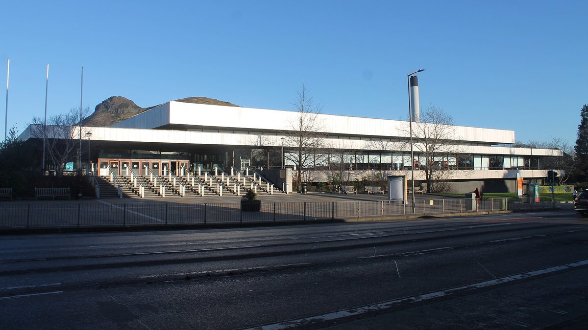

에든버러 공동체 태양광 협동조합, 113만 파운드 시민 출자 모집…25파운드부터, 공공·공동체 건물 10곳에 설치

왕립 커먼웰스 수영장·학교 5곳 포함, 예상 연 수익률 5%…2015년 출범 뒤 30곳 설치·조합원 700명 가까이, 공동체 기금으로 10만 파운드 넘게 나눠
영국 스코틀랜드 에든버러의 공동체 태양광 협동조합이 공공건물 지붕에 태양광을 더 올리기 위해 113만 파운드 규모의 시민 출자 모집에 나섰다. 에든버러 공동체 태양광 협동조합(ECSC)은 이 돈으로 왕립 커먼웰스 수영장과 학교 5곳을 포함한 공공·공동체 건물 10곳에 패널을 달 계획이며, 주민은 25파운드부터 출자해 조합원이 될 수 있고 예상 연 수익률은 5%다. 2015년 출범한 협동조합은 그동안 학교 17곳과 시의회 청사 웨이벌리 코트, 레저센터 여러 곳 등 30곳에 태양광을 설치해 1,400만kWh가 넘는 전기를 만들었고, 이산화탄소 2,000톤 이상과 시의회 에너지 요금 85만 파운드 가까이를 아낀 것으로 추정되며, 조합원은 700명에 가깝다. 이익 일부는 공동체 이익 기금으로 돌려 지금까지 10만 파운드 넘게 청소년 사업과 지역 단체, 학교, 공원·녹지를 지원했다. 이번 출자는 스코틀랜드 정부의 공동체·재생에너지 지원제도(CARES) 자금으로 준비했고, 협동조합 지원단체 Energy4All과 스코틀랜드 개발트러스트협회 소속 Democratic Finance Scotland가 돕는다. 비키 테일러(Vicki Taylor) 이사장은 출자가 수익을 다른 곳으로 흘려보내지 않고 "에든버러에 부를 남기는 것"이라고 했고, 제인 미거(Jane Meagher) 시의회 대표는 시가 계속 사업에 깊이 참여해 더 많은 시 건물에 패널이 올라갈 것이라며 시민 참여를 권했다.
시민에너지 관점
영국 잉글랜드의 브리스틀 에너지협동조합(Bristol Energy Cooperative)도 공모 출자로 시민 돈을 모아 지역 공동체 건물 지붕에 태양광을 올려 왔듯, 공공·공동체 지붕과 시민 출자를 잇는 방식은 영국 곳곳에서 이미 검증됐고 에든버러는 이를 10년 넘게 학교·청사·수영장으로 넓혀 왔다. 공공 지붕을 시민 협동조합에 맡기면 관리가 허술해진다는 걱정이 있지만, 이 협동조합은 학교 17곳과 시 청사를 포함한 30곳을 운영하며 시의 요금을 줄이고 공동체 기금까지 채웠다. 같은 지붕을 외부 사업자에게 임대하면 수익은 지역 밖으로 나가지만, 25파운드 출자로 주민이 주인이 되면 수익과 기금이 동네에 남는다. 우리 지자체도 학교·청사·체육시설 지붕을 임대 입찰에 붙이기 전에 시민 출자 협동조합에 먼저 내주고 이익 일부를 마을 기금으로 돌리는 규칙을 세워야 한다.
출처: The Herald 2026-11-02 로즈 몬커(Rose Moncur) 원문 보기
エディンバラのコミュニティ太陽光協同組合、113万ポンドの市民出資を募集…25ポンドから、公共・コミュニティ施設10カ所に設置
ロイヤル・コモンウェルス・プールや学校5校を含み、予想年利回り5%…2015年の発足以来30カ所に設置・組合員は700人近く、コミュニティ基金で10万ポンド超を分配
英国スコットランドのエディンバラで、コミュニティ太陽光協同組合が公共施設の屋根にさらに太陽光パネルを載せるため、113万ポンド規模の市民出資の募集を始めた。エディンバラ・コミュニティ太陽光協同組合（ECSC）はこの資金で、ロイヤル・コモンウェルス・プールや学校5校を含む公共・コミュニティ施設10カ所にパネルを設置する計画で、住民は25ポンドから出資して組合員になることができ、予想される年利回りは5%だ。2015年に発足した協同組合は、これまで学校17校や市議会庁舎ウェイバリー・コート、複数のレジャーセンターなど30カ所に太陽光を設置し、1,400万kWhを超える電力を生み出したほか、二酸化炭素2,000トン以上と市議会のエネルギー料金85万ポンド近くを節約したと推計され、組合員は700人近くに上る。利益の一部はコミュニティ利益基金に回し、これまでに10万ポンドを超える額で青少年事業や地域団体、学校、公園・緑地を支援してきた。今回の出資募集はスコットランド政府のコミュニティ・再生可能エネルギー支援制度（CARES）の資金で準備され、協同組合支援団体のEnergy4Allと、スコットランド開発トラスト協会に属するDemocratic Finance Scotlandが支援している。ヴィッキー・テイラー理事長は、出資は利益をよそに流さず「エディンバラに富を残すこと」だと述べ、ジェーン・ミーガー市議会リーダーは、市が今後も事業に深く関わり、より多くの市の建物にパネルが載ると述べて市民の参加を呼びかけた。
市民エネルギーの視点
イングランドのブリストル・エネルギー協同組合（Bristol Energy Cooperative）も公募出資で市民の資金を集め、地域のコミュニティ施設の屋根に太陽光を載せてきたように、公共・コミュニティの屋根と市民出資を結ぶやり方は英国各地ですでに確かめられており、エディンバラはそれを10年以上かけて学校や庁舎、プールへと広げてきた。公共の屋根を市民協同組合に任せると管理がずさんになるとの懸念もあるが、この協同組合は学校17校や市庁舎を含む30カ所を運営し、市の料金を減らしたうえでコミュニティ基金まで積み上げた。同じ屋根を外部の事業者に貸せば収益は地域の外に出ていくが、25ポンドの出資で住民が持ち主になれば、収益と基金は地元に残る。韓国の自治体も、学校・庁舎・体育施設の屋根を賃貸入札にかける前に市民出資の協同組合にまず開放し、利益の一部を地域の基金に回すルールをつくるべきだ。
出典: ザ・ヘラルド 2026-11-02 ローズ・モンカー（Rose Moncur） 原文を読む
爱丁堡社区光伏合作社募集113万英镑市民入股…25英镑起，装在10处公共和社区建筑上
包括皇家联邦游泳馆和5所学校，预期年收益率5%…2015年成立以来已装30处、社员近700人，社区基金累计分出逾10万英镑
英国苏格兰爱丁堡的社区光伏合作社为在更多公共建筑屋顶安装光伏，启动了113万英镑规模的市民入股募集。爱丁堡社区光伏合作社（ECSC）计划用这笔资金在包括皇家联邦游泳馆和5所学校在内的10处公共和社区建筑上安装光伏板，居民最低出资25英镑即可成为社员，预期年收益率为5%。该合作社2015年成立以来，已在17所学校、市议会办公楼韦弗利院（Waverley Court）和多处休闲中心等30处安装光伏，发电超过1,400万千瓦时，估计减少二氧化碳2,000吨以上、为市议会节省能源费用近85万英镑，社员接近700人。合作社把部分利润投入社区惠益基金，至今已拿出逾10万英镑资助青少年项目、地方团体、学校以及公园和绿地。此次募股由苏格兰政府社区与可再生能源支持计划（CARES）出资筹备，合作社支援机构Energy4All和苏格兰发展信托协会下属的Democratic Finance Scotland提供协助。理事长维基·泰勒（Vicki Taylor）表示，入股不是让利润流向别处，而是“把财富留在爱丁堡”；市议会领袖简·米格（Jane Meagher）则表示市议会将继续深度参与，更多市政建筑将装上光伏板，并鼓励市民参与。
市民能源视角
英格兰的布里斯托尔能源合作社（Bristol Energy Cooperative）也通过公开募股筹集市民资金，在地方社区建筑屋顶安装光伏；公共和社区屋顶与市民入股相结合的做法已在英国多地得到验证，爱丁堡则用十多年时间把它推广到学校、市政楼和游泳馆。有人担心把公共屋顶交给市民合作社会管理松散，但这个合作社运营着包括17所学校和市政楼在内的30处设施，既降低了市政电费，还充实了社区基金。同样的屋顶若租给外部开发商，收益就会流出地区；而居民以25英镑入股成为主人，收益和基金就留在社区。韩国的地方政府也应在把学校、政府楼和体育设施屋顶拿去招租之前，先向市民入股的合作社开放，并建立将部分利润投入社区基金的规则。
来源: 先驱报（The Herald） 2026-11-02 罗丝·蒙克（Rose Moncur） 查看原文
Edinburgh community solar co-op seeks £1.13 million from residents, from £25 a share, for panels on 10 public and community buildings
Royal Commonwealth Pool and five schools included, projected annual return of 5%; since 2015 the co-op has installed at 30 sites, has nearly 700 members and has given more than £100,000 through its community fund
A community solar cooperative in Edinburgh, Scotland, has opened a £1.13 million public share offer to put solar panels on more of the city's public buildings. The Edinburgh Community Solar Co-operative (ECSC) plans to use the money for installations on 10 public and community buildings, including the Royal Commonwealth Pool and five schools, and residents can become members by investing from £25, with a projected annual return of 5%. Since it was set up in 2015, the co-op has installed panels at 30 sites, including 17 schools, the council offices at Waverley Court and several leisure centres, generating more than 14 million kWh; the installations are estimated to have saved more than 2,000 tonnes of carbon dioxide and almost £850,000 in council energy bills, and membership stands at nearly 700. Part of the profits goes into a community benefit fund that has so far given more than £100,000 to youth projects, community groups, schools, and parks and green spaces. The offer was prepared with funding from the Scottish Government's Community and Renewable Energy Scheme (CARES) and is supported by the co-op support body Energy4All and Democratic Finance Scotland, part of the Development Trusts Association Scotland. Chair Vicki Taylor said investing means "keeping wealth in Edinburgh" rather than letting profits flow elsewhere, while council leader Jane Meagher said the council would stay closely involved, with panels set for more of its buildings, and urged residents to take part.
Citizen Energy View
Just as Bristol Energy Cooperative in England has raised money from residents through community share offers to put solar on local community buildings, pairing public and community roofs with citizen investment has already been proven across Britain, and Edinburgh has spent more than a decade spreading the idea to schools, council offices and a swimming pool. Some worry that handing public roofs to a citizen co-op means weaker management, but this co-op runs 30 sites, including 17 schools and the council's own offices, while cutting the council's bills and filling a community fund. Lease the same roofs to an outside developer and the income leaves the area; let residents own them from £25 a share and the returns and the fund stay local. Korean local governments should likewise offer school, office and sports-facility roofs to citizen-funded cooperatives before putting them out to lease, and set rules that send part of the profit into local community funds.
Source: The Herald 2026-11-02 Rose Moncur Read the original